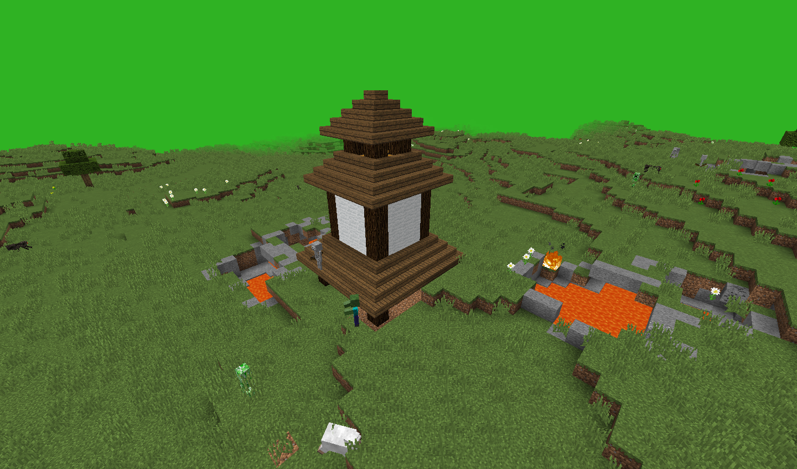

The tower of zombies and skeletons is a place with monsters and only! It has a lot of valuable resources at the top, but to get there you will have to defeat a lot of monsters! All the rewards are located in a rather secretive place. Just like that, you will not find it, but the caches are not as complex as, for example, in the House of Robbers
